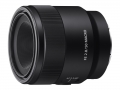

器材
党
全部器材
产品年表
名词百科
榜单
器材库
> 35mm画幅AF定焦镜头 > FE 50/2.8 Macro

索尼
FE 50/2.8 Macro
分类
35mm画幅AF定焦镜头
点评
0 条
图片
0 张
评测
5 篇
这是一只小巧便携的标准焦段微距镜头，放大倍率可达1:1。出色的成像质量和可操作性，使得这支镜头成为了日常休闲摄影和微距特写拍摄的上佳之选。
产品类型
35mm画幅AF定焦镜头
综合评分
暂无评分
无忌评测
微距无弱旅 索尼FE 50mm F2.8微距镜头评测
规格参数
网友点评
(0)
产品图 / 样片
(0)
评测文章
(5)
详细规格
镜头类型
微距镜头
发布日期
2016-08-30
厂家推荐价格
3,999.00 （人民币）
焦距
50mm
最大光圈
f/2.8
最小光圈
f/16
视角（对角）
47°
镜头结构
8片/7组
非球面镜片
1片
低/超低色散镜片
1片
光圈叶片
7片
最近对焦距离
16cm
最大放大倍率
1倍
滤镜口径
55mm
镜头卡口
Sony E
防抖
否
颜色
黑色
尺寸
70.8×71mm
重量
236g
附件
前镜头盖/后镜头盖
备注
防尘防滴设计
该产品暂无存档的网友点评
该产品暂无存档的产品图
评测 / 相关文章
详细内容
（存档）
微距无弱旅 索尼FE 50mm F2.8微距镜头评测
（存档）
［试用］索尼FE 50/2.8微距镜头实拍样张
（存档）
［资讯］索尼FE 50mm F2.8微距镜头图赏
（存档）
［资讯］索尼FE 50/2.8 Macro镜头官方样片
（存档）
相关文章
［试用］微距无弱旅 索尼FE 50/2.8微距镜头评测
（存档）
［试用］索尼FE 50/2.8微距镜头实拍样张
（存档）
［资讯］索尼FE 50mm F2.8微距镜头图赏
（存档）
［资讯］索尼FE 50/2.8 Macro镜头官方样片
（存档）
［资讯］索尼正式发布FE 50mm F2.8微距镜头
（存档）